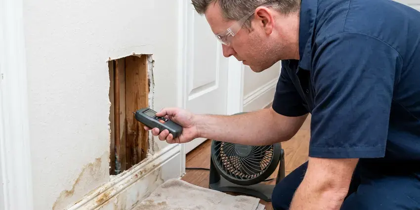

Gas Line Repair in Urbandale, IA
KFR Plumbing is your reliable source for professional gas line repair across Urbandale, IA, ensuring safety and compliance.
- Licensed & Insured Plumbers
- Local Urbandale Experts
- Licensed Gas Line Plumbers
- Safety First
Professional Gas Line Service Available in Urbandale, IA.
Our team is ready to provide the expert gas line solutions you need for peace of mind.
Your Local Choice for Gas Line Repair in Urbandale, IA
KFR Plumbing provides complete gas line repair services for residential and commercial properties throughout Urbandale, IA. From minor leaks to major line replacements, our certified technicians are equipped to handle all types of gas piping problems with precision and safety.
Our expertise includes:
- Installing new gas appliance hookups.
- Installation of new gas lines for gas appliances.
- Repair and replacement of natural gas and propane lines.

Additional Plumbing Maintenance Services in Urbandale, IA
Our maintenance and specialty plumbing services in Urbandale, IA catch small problems before they become emergencies.


Customers
Why Choose KFR Plumbing for Gas Line Repair in Urbandale, IA?
At KFR Plumbing, we understand the critical nature of gas line repairs and prioritize your safety above all else. Our team is trained in the latest safety protocols and uses advanced equipment to ensure every job is completed correctly.
- Code Compliant, Every repair meets the fuel gas code and is pressure tested before use.
- Code Compliance, All gas line repairs are performed according to local Iowa building codes and safety regulations, making sure your system is up to standard.
- Leak Pinpointing, We use electronic detectors and pressure gauges to find the exact leak location.
Citywide Coverage
No matter where you are located in Urbandale, IA, our commitment to dependable gas line service extends across the entire metro area. We are your local experts, ready to assist with any gas plumbing need.
Experienced Team
Our team of gas line specialists at KFR Plumbing brings years of hands-on experience to every job. They are continuously trained on the latest gas line technologies and safety practices, ensuring precise and reliable repairs.
Safety-First Approach
Safety is the cornerstone of all gas line repair work at KFR Plumbing. We carry out rigorous safety checks and follow strict procedures to protect your home and family throughout the repair process.
Trusted Certified Urbandale Plumbing Services Professionals
At KFR Plumbing, we take pride in providing certified plumbing services throughout Urbandale, IA. Backed by leading industry credentials, our experienced plumbers combine technical skill with genuine customer care. Whether it is repair, installation, or maintenance, we follow strict safety and quality standards to deliver long-lasting results you can trust.
Call Us Now PHCC Plumbing Contractor Recognition
PHCC Plumbing Contractor Recognition Better Business Bureau (BBB) Accreditation
Better Business Bureau (BBB) Accreditation Angi Certified Pro
Angi Certified Pro ISO 9001 Quality Management Certification
ISO 9001 Quality Management CertificationSafe Gas Line Repair Services in Urbandale, IA
Gas Line Repair Costs in Urbandale, IA
Simple connector or fitting repairs often cost $150 to $450. Replacing a section of interior pipe usually runs $400 to $1,200, while buried yard line replacement can range from $1,000 to $4,000 or more depending on length and digging conditions. Rocky or hard-packed soil can add to the labor cost. We give you a firm written price before we begin.

Black Iron Pipe Repair in Urbandale, IA
Many older homes in Urbandale, IA use black iron pipes for gas lines. While durable, these pipes can corrode over time, especially at joints, leading to leaks. Our team is expert in repairing and replacing sections of black iron pipe, ensuring secure, threaded connections and applying appropriate pipe sealant for a leak-free system. We also check for proper grounding and bonding to prevent electrolysis.
Gas Leak Detection & Repair in Urbandale
Suspecting a gas leak is a serious concern, and prompt action is essential. Our technicians use modern gas leak detection equipment, like electronic sniffers and soap solutions, to pinpoint the exact location of a leak in your home in Urbandale. Once identified, we perform precise repairs, which can involve patching, replacing sections of pipe, or tightening connections, always ensuring the highest safety standards and proper pressure testing after the repair.
Emergency Gas Line Repair in Urbandale
Gas leaks are emergencies that require immediate attention. KFR Plumbing offers emergency gas line repair services in Urbandale to address urgent situations quickly and safely. Our fast response team is equipped to handle critical gas line failures, working efficiently to isolate the leak, perform the necessary repairs, and restore safety to your home, often coordinating with the local gas utility as needed.
Natural Gas Leak Detection & Repair in Urbandale
Detecting a natural gas leak requires specialized equipment and expertise. Our technicians use advanced leak detectors, like combustible gas sniffers, to pinpoint the exact location of a leak, whether it's from a faulty fitting, a corroded pipe, or a damaged appliance connector. Once located, we'll carefully shut off the supply, repair or replace the compromised section of pipe, and thoroughly test the system to ensure there are no further leaks. This precise approach limits disruption and maximizes safety for your Urbandale home.
Permit & Inspection Guidance in Urbandale
Many gas line repairs, especially those involving major alterations or new installations, require permits and inspections from Urbandale building authorities. We can guide you through this process, ensuring all necessary paperwork is filed and that our work meets the strict requirements for final inspection. This helps protect the long-term safety and legality of your gas system.
Corroded & Damaged Gas Pipe Replacement in Urbandale
Over time, ground movement and moisture can cause underground gas lines to corrode or become damaged, along with tree roots and age. Clay soil shifts as it freezes, thaws, wets, and dries, which can crack clay sewer laterals and let roots inside. We specialize in replacing damaged sections of gas piping, using durable materials like polyethylene (PE) for underground lines or black iron pipe for exposed sections, all installed to current code. Our repairs prevent future leaks and ensure the long-term reliability of your gas supply in Urbandale.

Gas Line Relocation & Upgrades in Urbandale, IA
Renovating your home or adding a new gas appliance in Urbandale, IA might require relocating or upgrading your existing gas lines. Our plumbers can safely extend or reroute gas lines to fit new layouts, making sure of proper sizing for increased demand and compliance with all current building codes. This often involves calculating BTU requirements for new appliances and selecting the right pipe diameter.
Gas Line Repair Near Me in Urbandale, IA
Our local presence means we can respond quickly to your gas line repair needs anywhere in Urbandale, IA. We pride ourselves on being accessible and offering personalized service that larger, non-local companies cannot match. Trust KFR Plumbing to be your local, expert gas line repair partner.
We know the older yard lines, CSST systems and soil conditions common in Urbandale. That local experience speeds up leak detection and repairs. Your gas service is restored safely and on time.
KFR Plumbing at a Glance
- Fully licensed plumbing team covering Urbandale, IA
- 24/7 emergency service with same-day scheduling
- Upfront, flat-rate pricing before work begins
- 4.8-star rated by 620+ Iowa customers
Urbandale Map
Urbandale Information
- Population
- 46,729
- Area codes
- Local
- Service area
- Urbandale and communities within 40 miles
- Nearby
- West Des Moines, Waukee, Des Moines, Ankeny
Underground gas lines in Urbandale, IA can shift and corrode as the ground around them moves, so professional repair and maintenance are essential for safety. Clay soil shifts as it freezes, thaws, wets, and dries, which can crack clay sewer laterals and let roots inside.
Expert Services
Trust our professionals for reliable KFR Plumbing solutions in Urbandale, IA.
Our Specialized Plumbing Services in Urbandale, IA
At KFR Plumbing, we provide a complete range of plumbing services across Urbandale, IA. From leak detection to full system installations, our team ensures fast, precise, and affordable service for both residential and commercial properties. Explore our core services below:


How Our Gas Line Repair Process Works in Urbandale, IA
Here is how we take your system from leaking to safely back in service.
Request a Quote
Contact KFR Plumbing by calling (515) 308-3583 to schedule an appointment. We'll discuss your gas line problem and arrange for a technician to visit your Urbandale home.
Thorough Diagnosis
Our certified technician will arrive promptly to inspect your gas lines, using specialized tools to accurately diagnose the problem, whether it's a leak or damage.
Safe & Precise Repair
We will explain the required repairs and provide a clear estimate. Upon your approval, our team will perform the repair using quality materials and strict safety standards.
Frequently Asked Questions About Gas Line Repair in Urbandale
Small fitting or connector repairs usually run $150 to $450. Section replacements cost $400 to $1,200, and buried line replacement can reach $1,000 to $4,000 or more.
KFR Plumbing stands behind all our gas line repair work with a strong warranty on both parts and labor. We use quality materials from reputable brands such as Gastite, TracPipe, and Wardflex, supporting the longevity and safety of your repaired system. Specific warranty details will be provided with your estimate.
CSST is approved and widely used when installed and bonded correctly. We verify bonding and repair damaged sections with approved parts.
While there isn't a strict annual requirement for gas line inspections, it's a good practice to have your gas lines checked by a professional every few years, especially if your home is older or if you notice any changes in appliance performance. Regular maintenance can catch small issues before they become major problems.
Utilities lock the meter when they find a leak or failed pressure test. A licensed plumber must repair the issue and pass a test before service is restored.
Absolutely not. Gas line repair is very dangerous and should only be performed by licensed and certified professionals. Incorrect repairs can lead to serious gas leaks, explosions, fires, and carbon monoxide poisoning. Always call a professional like KFR Plumbing.
We use black iron, coated steel, CSST such as TracPipe and Gastite, and polyethylene for buried lines. The right choice depends on where the pipe runs and code.
The duration of a gas line repair varies. Simple repairs, like tightening a connection or replacing a short segment of pipe, might take a few hours. More complex issues, such as replacing a long section of underground line, could take a full day or even longer, depending on the scope of work.
What People Are Saying About Our Plumbing Experts?

Sofia M.
Two new toilets installed in one visit, no mess left behind, and the tech even adjusted a faucet he noticed was dripping. Fair pricing and really friendly.
Toilet Installation · Des Moines, IA
James P.
Our commercial plumbing system had a leak under the sink, and KFR Plumbing handled it professionally. The plumbers arrived quickly and restored everything without disruption to our customers.
Commercial Plumbing · West Des Moines, IA
Patricia H.
We had a slab leak that two other companies could not find. KFR Plumbing located it in under an hour, explained our options, and the price matched the quote to the dollar.
Slab Leak Repair · Cedar Falls, IALaura S.
I scheduled a water heater replacement, and the team made the process smooth and affordable. The new unit works perfectly, and they cleaned up after completing the job.
Water Heater Replacement · Ankeny, IA
Daniel K.
A pipe burst at 11 pm and they actually answered. The plumber showed up within the hour, shut everything down, and had us back to normal the next morning. Could not ask for more.
Emergency Plumbing · Ames, IA
Mark T.
When our office needed drain cleaning, KFR Plumbing provided quick, reliable service. The plumber arrived on time and made sure every drain flowed perfectly before leaving. Very satisfied.
Drain Cleaning · Urbandale, IA